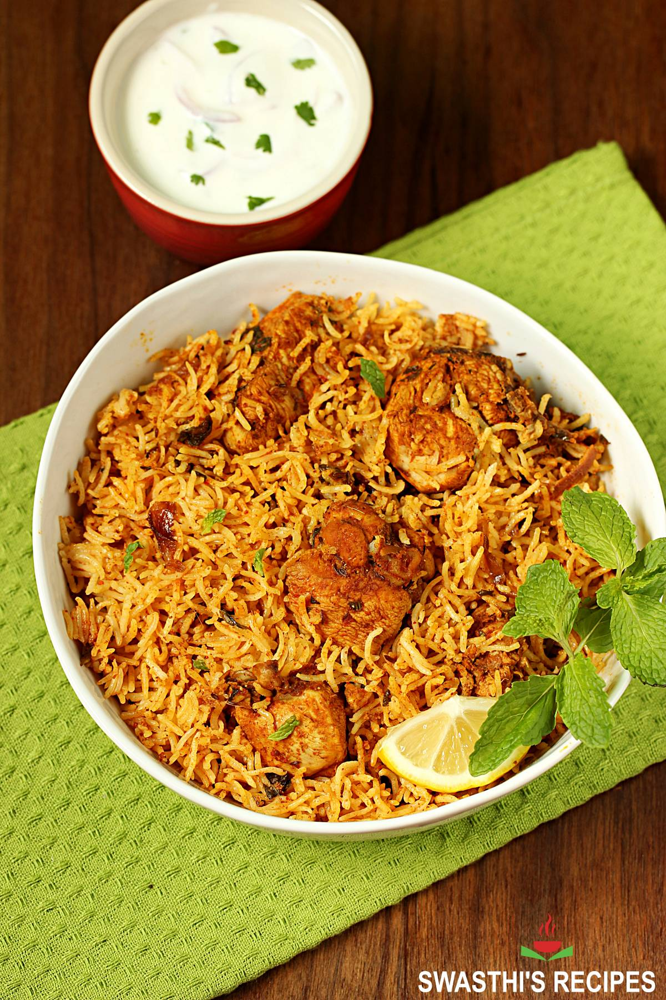

Biryani

Biryani is a celebration of all that is great about Indian food the heady aromas, the vibrant colours, the fluffy rice and those addictive curry flavours. Make this Chicken Biryani with your protein of choice or try a vegetable biryani!
- ½ kilogram Chicken (skinless bone-in or boneless)
- 3 tablespoons Plain Yogurt (curd or dahi)
- 1 ¼ tablespoons Ginger Garlic Paste
- ¾ teaspoon Salt
- ¼ teaspoon Turmeric
- 1 teaspoon Red Chilli Powder
- 1 tablespoon Garam Masala
- 1 tablespoon Lemon Juice (optional)
- 1 Bay Leaf
- 4 Green Cardamoms
- 6 Cloves
- 1 inch Cinnamon Stick
- 1 Star Anise
- ¾ teaspoon Shahi Jeera (caraway seeds)
- 1 strand Mace (optional)
- 2 cups Basmati Rice
- 2 tablespoons Ghee (or Oil)
- 1 Large Onion (sliced thinly)
- ½ cup Mint Leaves (chopped fine)
- 1 Green Chili (slit or chopped)
- ¼ cup Plain Yogurt
- ½ teaspoon Red Chili Powder (optional)
- 1 teaspoon Garam Masala
- 3 cups Water
- ¾ teaspoon Salt (to stir in water)
- 2 tablespoons Fried Onions (optional)
- 1 pinch Saffron (optional, soaked in 2 tbsps hot milk)
- Marinate the chicken with yogurt, ginger garlic paste, salt, turmeric, red chili powder, garam masala, and lemon juice. Let it sit for at least 30 minutes.
- Heat ghee or oil in a large pot. Add bay leaf, green cardamoms, cloves, cinnamon stick, star anise, shahi jeera, and mace. Sauté for a few seconds until fragrant.
- Add sliced onions and fry until golden brown.
- Add the marinated chicken and cook until the chicken is no longer pink.
- Add chopped mint leaves and green chili. Cook for another 2-3 minutes.
- Add plain yogurt, red chili powder (optional), and garam masala. Mix well and cook until the chicken is fully cooked and the gravy thickens.
- In a separate pot, bring 3 cups of water to a boil. Add salt and basmati rice. Cook until the rice is 70% done. Drain the water.
- Layer the partially cooked rice over the chicken in the pot. Sprinkle fried onions and saffron milk (if using) on top.
- Cover the pot with a tight-fitting lid. Cook on high heat for 5 minutes, then reduce to low heat and cook for another 15-20 minutes.
- Turn off the heat and let the biryani rest for 10 minutes before serving.